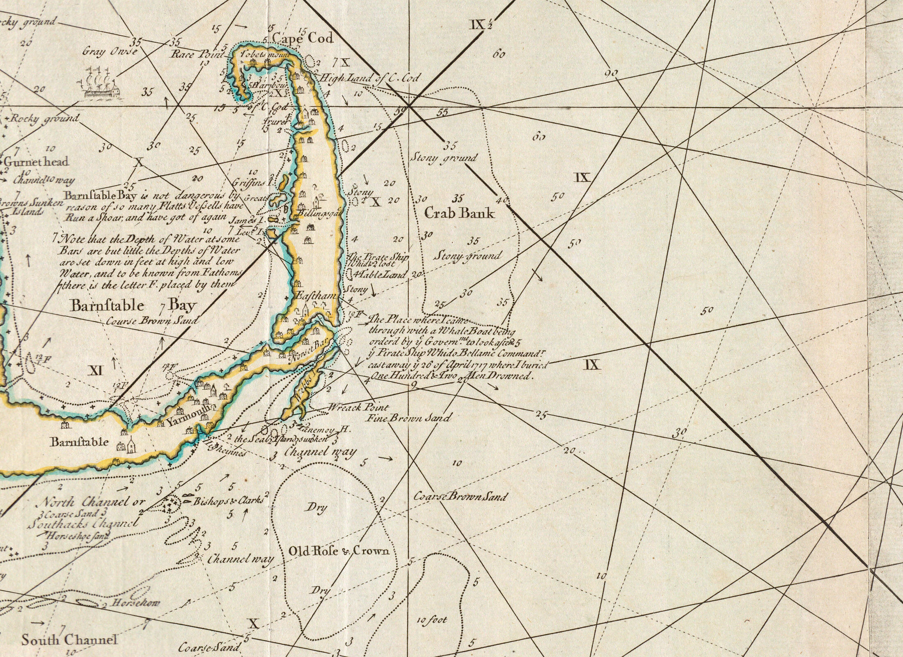

Rig your Logbook sheet
One sheet of blank paper. Fold it in half like a book. On the cover: your name, "Day 2," today's date.
Open it. Across the top of the inside, make three columns:
WHAT IT SHOWS · WHAT IT LEAVES OUT · WHO IT'S FOR
This sheet goes in your Voyage Journal. Everything you discover today gets logged here.
The Size Lie
The world map you've seen your whole life has been lying to you about size. Time to catch it.
Open The True Size →- In the search box, type Greenland. Drag it down onto Africa. What happens?
- Now try your own: drag any 2 more countries toward the equator or the poles. Watch them change.
- Why it happens: flat maps must stretch the round Earth somewhere. The usual map (called Mercator, invented in 1569) stretches everything near the poles.
- So why do we still use it? Mercator has a superpower: a straight line on his map is one steady compass course at sea — a rhumb line. Sailors loved that. And your phone's map app still runs on its cousin, Web Mercator.
Chart Detective: 1717
This is the real chart drawn by Cyprian Southack — the mapmaker sent to salvage our wreck. Open the full-size zoomable scan and investigate.

Open the FULL chart — zoom in →Detective hunt — find:
- Little numbers sprinkled all over the water. What do you think they mean? (Hint: what would a sailor be terrified of?)
- The spot where Southack wrote about OUR ship. It's there, in his own words, right on the chart. First pair to find it — write what he wrote on the board!
- A place name you recognize from living here.
- Long straight lines criss-crossing the whole chart. Those are rhumb lines — compass courses a captain could steer without turning. This chart is a tool, not a picture.
- Something Google Maps has everywhere that this chart barely shows at all.
Think deeper: why might a 1700s mapmaker leave something off on purpose?
Salem, Two Ways
Now the map in your pocket. Same world — completely different choices.
Open Salem on Google Maps →- Look at Salem in normal map view. Then switch to satellite (Layers button, bottom-left).
- Find our school. Find the harbor. Find something that was NOT here in 1717.
- Compare with Southack's chart: he filled the water with detail and left the land almost empty. Google does the opposite. Why?
Talk with your first mate: your two maps of Salem disagree about almost everything. Is one of them wrong?
Find the Wreck
In 1717, Southack could only mark the wreck by drawing it on his chart. Today, two little numbers can take you straight there. Try it:
41.891, -69.957
- Copy those numbers into the Google Maps search box (or tap the button below).
- Switch to satellite. Zoom out slowly. Where on Cape Cod are you?
- That water is where the Whydah has rested since April 26, 1717.
Bonus: those numbers are called coordinates — latitude and longitude. Thursday, you learn why sailors in 1717 could figure out one of them but not the other… and how that killed people.
Quiet Water: the reflection
On the back page of your Logbook sheet, write (or draw) your answer:
"What would a map of YOUR life include
that a stranger's map of you would leave out?"
There are no wrong answers. This one's yours.
cartography = map-making (literally "map writing") · projection = how you flatten a round world · legend = the map's key to its symbols · rhumb line = a straight-line compass course · scale = how much smaller the map is than the world